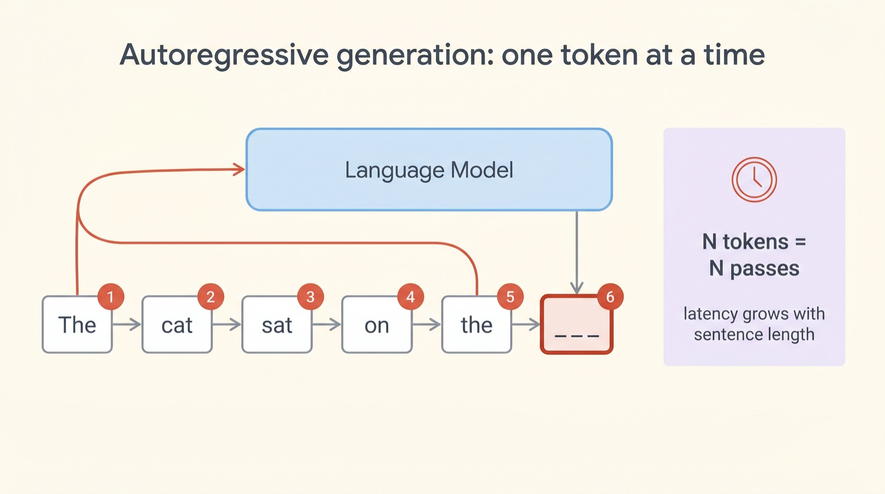
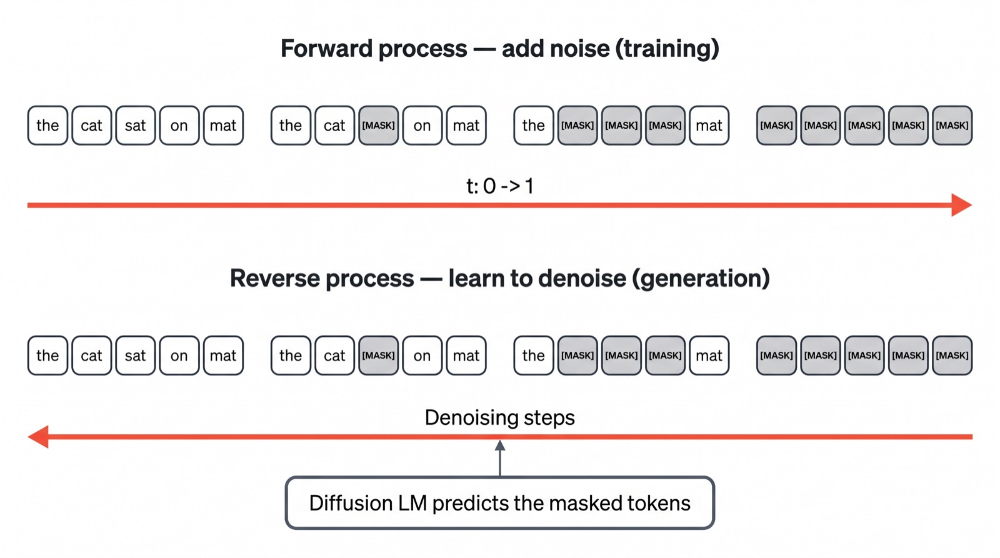
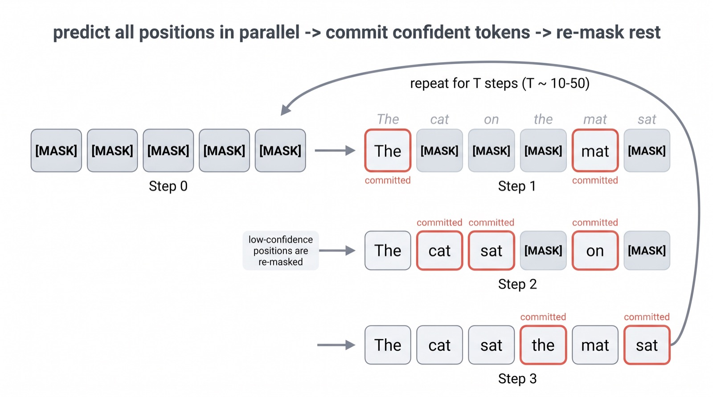
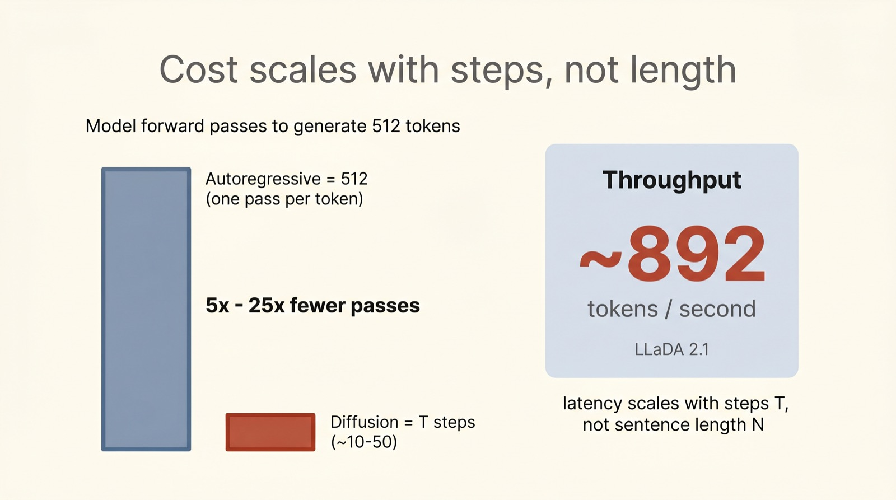
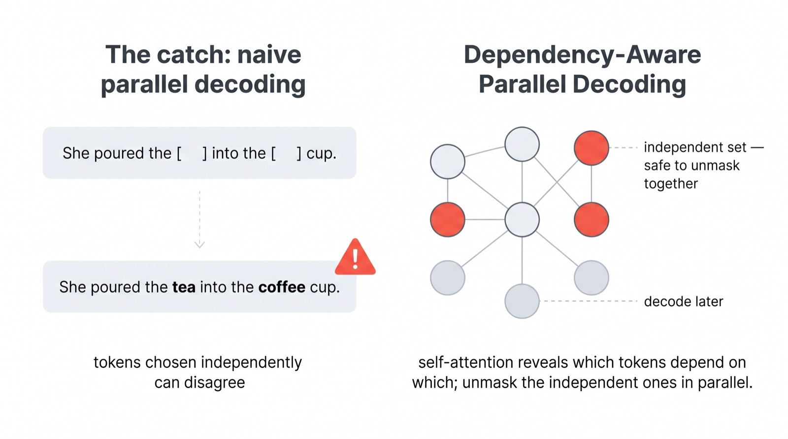
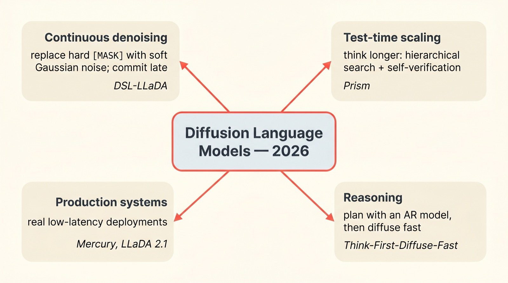

A different way to generate text
The Model
That Writes
All at Once.
Every chatbot you have ever used writes like a person typing — one word, then the next, then the next, never going back. Diffusion language models throw that rule away. They start with a page of static and sharpen it into a sentence, many words at a time. Here is how that works, and why, in 2026, it finally got fast enough to matter.
For five years, "large language model" has quietly meant "next-word predictor." But the same family of models behind AI image generators — diffusion models — learned to do text too. This is the clearest mental picture I can give you of how they pull it off.
Scroll to begin.
↓
The one-word-at-a-time machine
Ask ChatGPT, Claude, or Gemini a question and watch the answer appear. It streams out left to right, word by word, like someone typing in real time. That is not a cosmetic animation — it is literally how the model thinks. These are autoregressive models: each word is predicted from all the words before it, and only then is the next word predicted. To write a 500-word answer, the model has to run itself 500 times in a row.
This design is wonderful for quality. Every new word gets to "see" everything written so far, so the text stays coherent. But it has one stubborn cost: the words must come in order. You cannot write word #200 until words #1 through #199 exist. The model is a brilliant writer chained to a typewriter — it can only move forward, one key at a time.

"Token" ≈ a word or word-piece. A model's vocabulary is made of tens of thousands of these. For this article, just read "token" as "word."
For most of the deep-learning era, we simply accepted this. Then a few researchers asked a mischievous question: what if a model could write a whole sentence the way an image generator paints a whole picture — all of it at once, then cleaned up?
An idea borrowed from image generators
You have probably seen an AI image start as a field of random noise and gradually resolve into a photo of a corgi. That process is called diffusion. It is trained in a clever, almost lazy way. Take a real photo, add a little noise, add more, add more, until it is pure static. Now train a model to undo one step of that — to look at a noisy image and guess the slightly cleaner version. Do that millions of times and the model learns to walk all the way from static back to a real-looking image.
Diffusion language models take exactly this recipe and swap "noise" for something that makes sense for text: masking. Instead of blurring pixels, you hide words.
During training, the model is shown a real sentence with some words randomly replaced by a
blank [MASK] tag — sometimes one or two words hidden, sometimes nearly all of them.
Its only job is to fill the blanks back in. That is the whole training signal.
[MASK]

Notice the trick. The hard direction — going from nothing to a sentence — is never trained directly. We only ever train the easy direction: "here is a partly-masked sentence, guess the missing words." Stack enough of those easy steps together and you get the hard thing for free. Generation is just denoising, run from a blank page.
How a diffusion model actually writes
Here is the part that surprises people. To generate text, a diffusion model does
not start from an empty cursor. It starts from a row of blanks — a sentence that is
entirely [MASK], of roughly the length it intends to write —
and then refines it over a handful of rounds called denoising steps.
Each step looks the same:
1. Predict everything, everywhere, at once. The model looks at all the blanks
simultaneously and proposes a best-guess word for every position in parallel — not just
the next one.
2. Commit only what it's sure about. It keeps the handful of guesses it is most
confident in and "locks them in" (unmasks them).
3. Re-mask the rest. The shakier positions are blanked out again and revisited
on the next round, now with more context to lean on.
Repeat for, say, ten to fifty rounds and the blanks fill in — not left to right, but most-confident first, like a person solving a crossword by writing in the answers they are sure of and circling back to the tricky clues.

Because the model can see the blanks on both sides of any word while it guesses, it is naturally good at filling middles, matching brackets, and keeping a long answer internally consistent — things a strictly left-to-right model has to do blind.
Why it can be so much faster
Now the payoff. An autoregressive model needs one full pass through the network for every single word — 512 words, 512 passes, strictly in a line. A diffusion model needs one pass per denoising step, and there are only a handful of steps — typically ten to fifty — no matter how long the answer is.
That is the whole game in one sentence: an autoregressive model's cost grows with the length of the text; a diffusion model's cost grows with the number of refinement steps. Choose 25 steps and a 512-word answer costs 25 passes, not 512.

This is why diffusion language models are exciting for anyone who cares about latency — chat that feels instant, code that completes the moment you stop typing, agents that take many small steps and cannot afford to wait on each one. Fewer passes, more words per pass.
The catch — and the clever fix
If generating words in parallel were free, autoregressive models would already be extinct. They are not, because parallelism has a real hazard: words chosen independently can quietly contradict each other. Fill two blanks at the same time and the model might commit to "tea" in one and "coffee" in the other within the same cup — each a fine guess alone, nonsense together.
The fix that defined 2026 research is to stop pretending the blanks are independent. Before committing, the model uses its attention to ask: which of these blanks actually depend on each other? Words that lean on one another are decoded in separate rounds; words that don't can be safely unmasked together. This is the idea behind dependency-aware parallel decoding — find a group of mutually-independent blanks and fill that whole group at once.

A related trick is to generate in blocks: write a chunk of the answer with diffusion, lock it, then move to the next chunk. That recovers some of the left-to-right coherence autoregressive models get for free, while keeping the parallel speed within each block. The whole frontier is a negotiation between two goods — how fast can we go versus how sure are we the words still agree.
The 2026 frontier
For years diffusion text was a research curiosity — elegant, but slower and weaker than the autoregressive champions. That changed quickly. Four lines of work, all moving at once, are what turned it into something you will actually use.

Continuous denoising
The original recipe flips a word from hidden to revealed in one hard jump. Newer work replaces that binary mask with a soft noise — nudging each word a little in meaning-space and deferring the final hard choice to the very last step. It is a smoother climb, and it scales to 8-billion-parameter models (e.g. the DSL line of work).
Test-time scaling
Just as reasoning chatbots got smarter by "thinking longer," diffusion models can spend extra steps searching and checking their own drafts (methods like Prism add hierarchical search and self-verification). More steps, better answers — a dial you can turn at generation time.
Reasoning
Pure parallelism struggles with step-by-step logic. A practical compromise: let a small left-to-right model sketch a plan, then let the diffusion model fill in the details fast — "think first, diffuse fast."
Production systems
Most importantly, diffusion LLMs left the lab. Commercial models like Mercury and open releases like LLaDA 2.1 now serve real traffic at hundreds of tokens per second, with deployment guides and GPU recipes written for them. The curiosity became infrastructure.
Why this matters
Diffusion language models are not (yet) here to dethrone the autoregressive giants. The honest reviews of 2026 — including a few pointed "reality-check" papers — find them still trailing on the hardest reasoning, and finicky to sample correctly. What they offer is a different shape of trade-off, and in computing, a new trade-off is how progress sneaks in.
The reason to care is simple. A whole generation of AI products is bottlenecked on the same thing: waiting for the next word. If a model can paint a paragraph in a dozen passes instead of writing it in five hundred, that unlocks interfaces that feel instant — and agents that can afford to take many small thinking steps. Whether diffusion wins outright or simply lends its parallel trick to hybrid models, the assumption that "language models write left to right" is no longer a law of nature. It is just one option.
Want to go deeper? Look up the LLaDA family of open diffusion LLMs, the Mercury commercial model, and the 2026 work on dependency-aware parallel decoding and test-time scaling for diffusion — all freely discussed on arXiv and the usual research blogs.